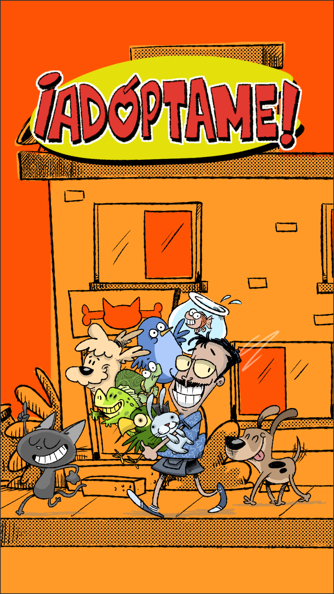
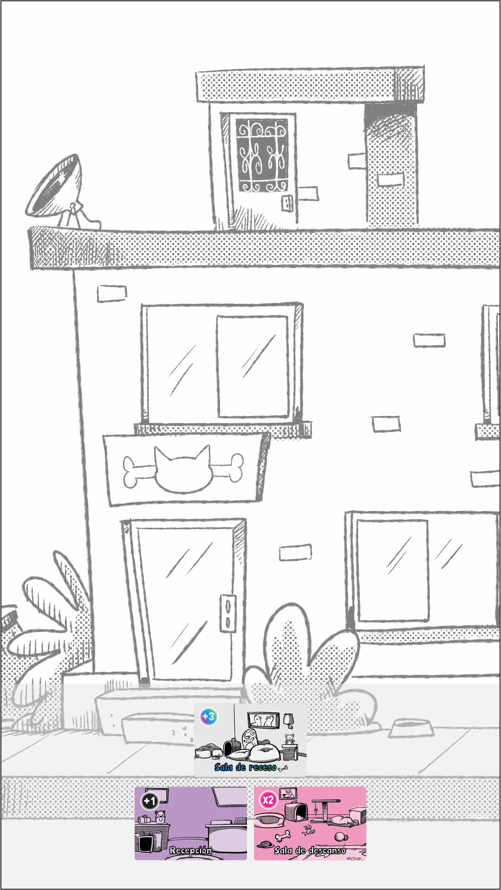
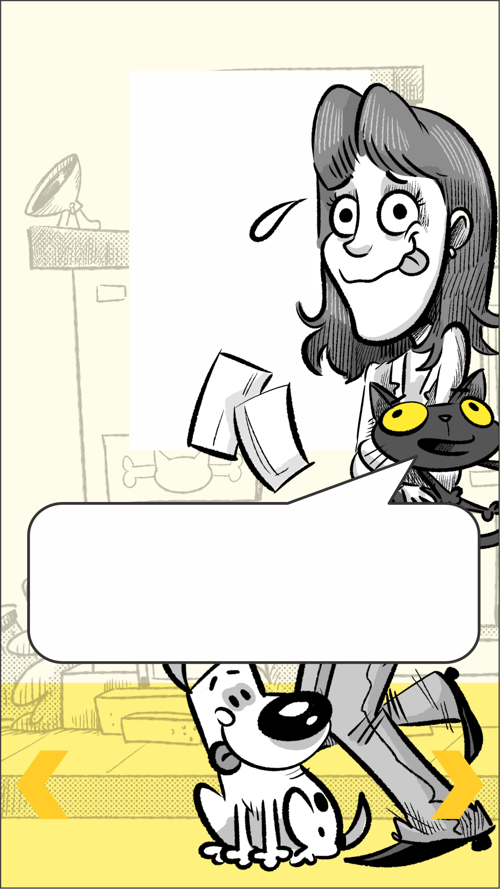

Nuestra fundación no siempre fue como la conocen hoy. Hubo un tiempo en el que apenas teníamos lo necesario, pero también muchas ganas de ayudar.
Hoy queremos invitarlos a regresar con nosotros a esos primeros días y recorrer, paso a paso, el camino que nos trajo hasta aquí.
Nuestra historia comenzará de la forma más sencilla: con una recepción, la sala de receso y una sola habitación. Y para este primer capítulo, esa habitación será la sala de descanso.
